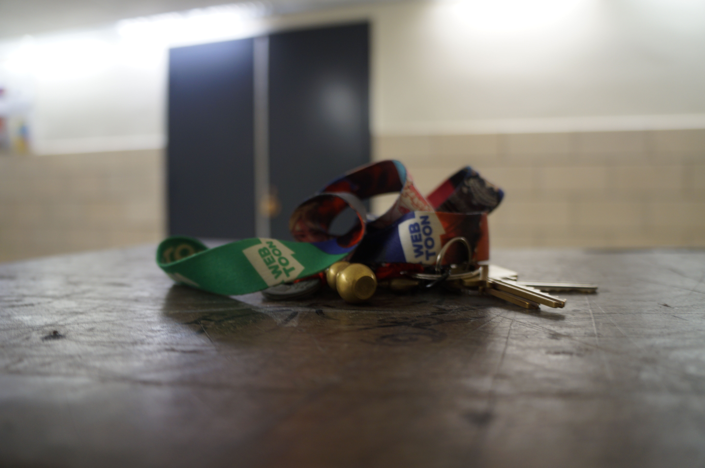
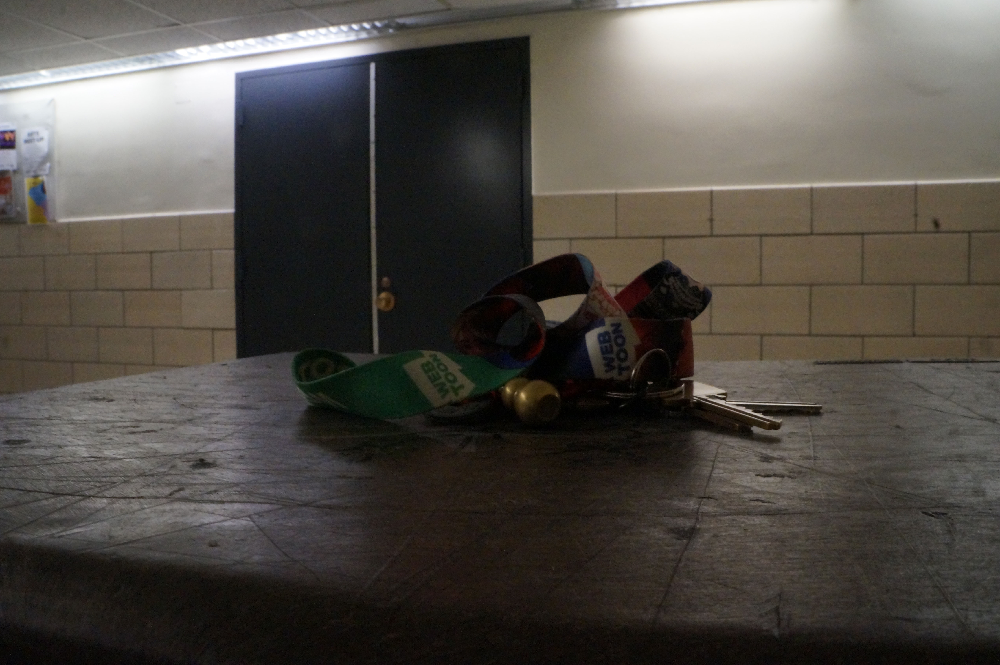
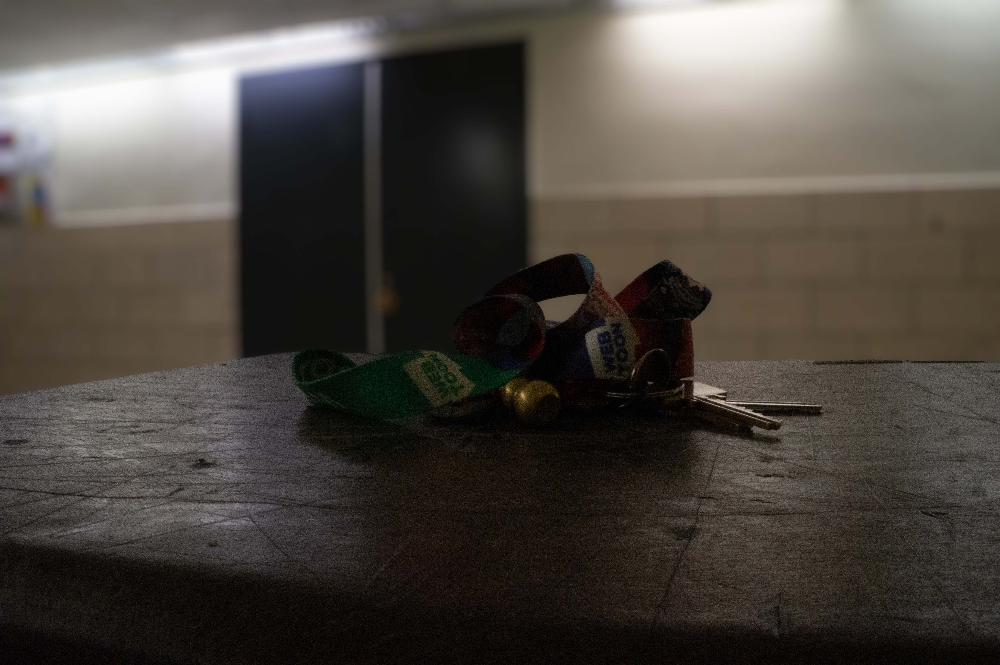
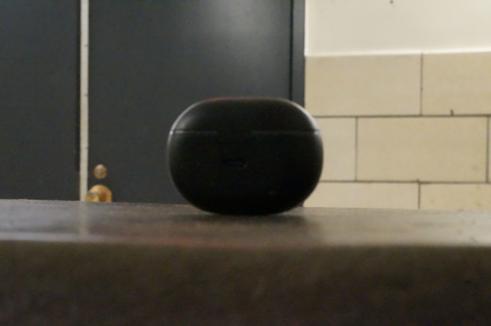
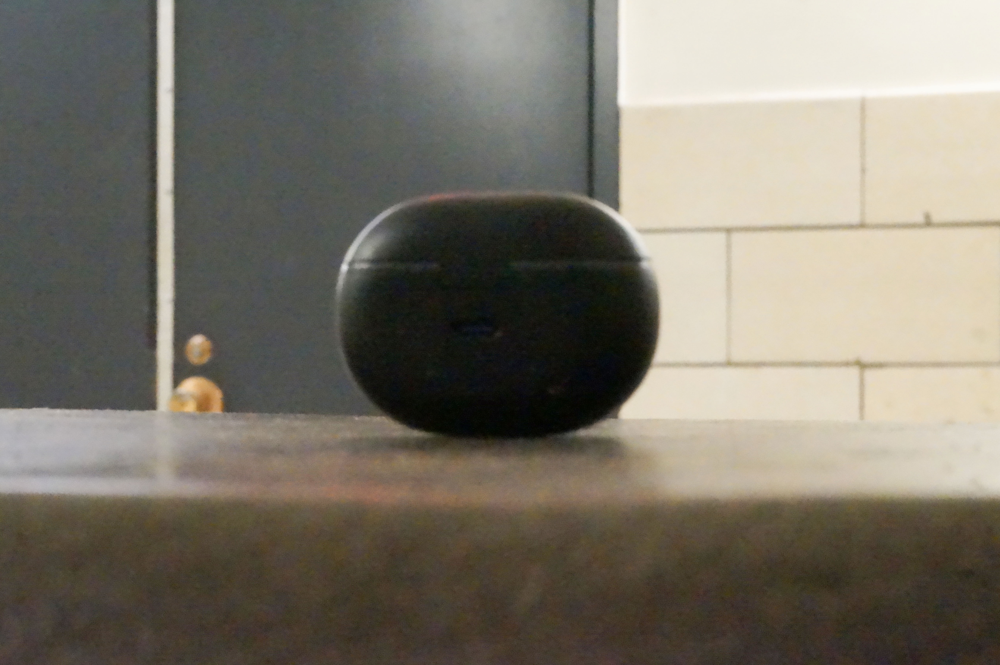
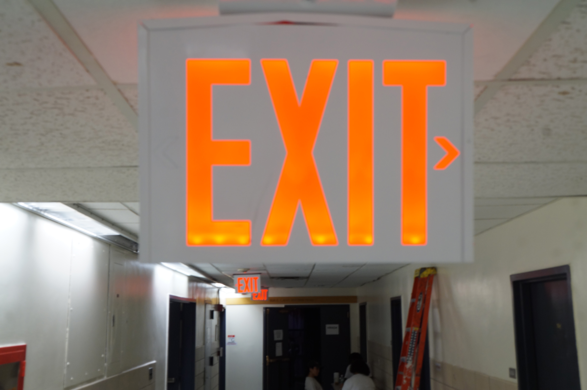
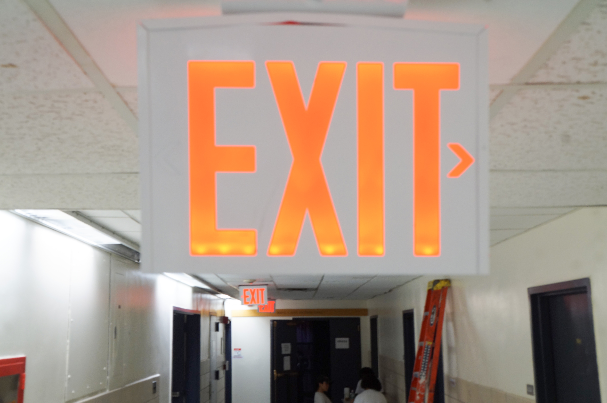

Shot with a wide aperture to keep the lanyard and keys sharp in the foreground while naturally blurring the background door and tiled wall.

Shot with a narrow aperture so both the foreground keys and the background doors, wall tiles, and ceiling remain in crisp focus.

Starting from the deep depth of field image, Photoshop's Lens Blur filter and depth masking were used to recreate a shallow focal plane in post-production.
Before:

After:

Adjusted exposure, contrast, shadows, and clarity in Camera Raw to bring out detail in the dark earbuds case against the bright background.
Before:

After:

Refined highlights, color temperature, and tonal balance in Camera Raw to control the orange glow of the EXIT sign while keeping the hallway legible.